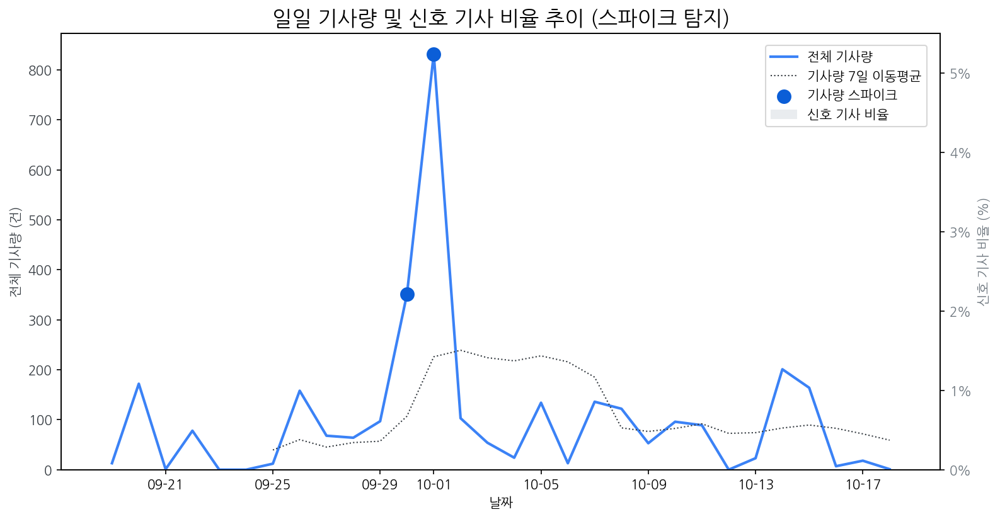

| 날짜 | 기사량 | Z-Score |
|---|---|---|
| 2025-09-30 | 351건 | 2.04 |
| 2025-10-01 | 832건 | 2.1 |
| 모멘텀 토픽 | z_like 점수 | 누적 언급량 |
|---|---|---|
| 삼성 | -1.27 | 349 |
| 날짜 | 유형 | 제목 |
|---|---|---|
| 2025-10-19 | INVEST,LAUNCH | OLED 중심 체질 개선 성공한 LGD, 4년 만에 연간 흑자 전망 |
| 2025-10-16 | LAUNCH | 인하대, 이정환 교수 연구실 소속 학생들 국제학술대회서 성과 인정 |
| 2025-10-19 | LAUNCH | “기술로 리더십 잡는다”...테크포럼·기술전 여는 삼성 |
| 2025-10-19 | INVEST,LAUNCH | 中 JBD “1만PPI 마이크로 LED 패널 내년 양산” |
| 2025-10-19 | CERT,PARTNERSHIP | [Daily New유통] 쿠팡, 세븐일레븐, 놀유니버스 外 |
| 제목 |
|---|
| OLED 중심 체질 개선 성공한 LGD, 4년 만에 연간 흑자 전망 |
| ‘확장현실 안경’ 피지컬AI 경쟁 뜨겁다…선수 친 메타 |
| “노트북·모니터 OLED 광풍 분다”…삼성·LGD, OLED 새 활로 찾았다 |